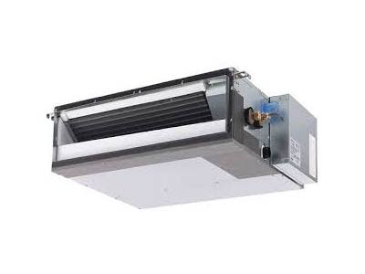

نصب، اجرا و تعمیر تخصصیتوسط تیم مجرب با تجهیزات کامل
همکاری مستقیم با برند های معتبر
هر پروژه، نیاز تهویه متفاوتی دارد
مشتریان ما در گروهها و با نیازهای متفاوتی به ما مراجعه میکنند؛ از سازندگان و مهندسان پروژه گرفته تا مدیران مجموعههای تجاری و کاربران مسکونی. برای دریافت راهکار دقیقتر و اطلاعات تکمیلی، روی گروه متناسب با نوع مصرف یا فعالیت خود کلیک کنید.
راهنمای انتخاب
۰۰
راهکار مناسب برای هر نوع نیاز
هر پروژه، کسبوکار و فضای مسکونی نیازهای متفاوتی در زمینه تهویه مطبوع دارد. گروه متناسب با نوع مصرف یا فعالیت خود را از سمت راست/چپ انتخاب کنید تا اطلاعات تکمیلی، راهکارهای پیشنهادی و خدمات مرتبط با آن گروه را مشاهده کنید.
فروشگاه تخصصی
محصولات منتخب داکت اسپلیت در مشهد
در فروشگاه تخصصی داکت اسپلیت مشهد در مشهد، مجموعهای از دستگاههای منتخب و کاربردی برای فضاهای مسکونی، تجاری، اداری و صنعتی ارائه میشود. برای انتخاب دقیقتر، علاوه بر مشاهده مشخصات محصولات، میتوانید از ماشینحساب آنلاین برآورد ظرفیت استفاده کنید.

داکت اسپلیت ایران رادیاتور مدل IAC-24CH
۲۴ هزار BTU☎ قیمت: به علت نوسان ارزی، جهت اطلاع از قیمت و موجودی تماس بگیرید.
استعلام قیمت و موجودیداکت اسپلیت ال جی مدل ABQ-36GM3T1
۳۶ هزار BTU · اینورتر☎ قیمت: به علت نوسان ارزی، جهت اطلاع از قیمت و موجودی تماس بگیرید.
استعلام قیمت و موجودیداکت اسپلیت هایسنس مدل HIA36
۳۶ هزار BTU☎ قیمت: به علت نوسان ارزی، جهت اطلاع از قیمت و موجودی تماس بگیرید.
استعلام قیمت و موجودیداکت اسپلیت فارنهایت
۳ تن — ۳۶۰۰۰ BTU- پنل داخلی
- کویل آب گرم
- ترموستات دیواری
- فیلتر قابل شستوشو · کمصدا و کممصرف
☎ قیمت: به علت نوسان ارزی، جهت اطلاع از قیمت و موجودی تماس بگیرید.
استعلام قیمت و موجودیداکت اسپلیت فارنهایت
۲ تن — ۲۴۰۰۰ BTU- پنل داخلی
- کویل آب گرم
- ترموستات دیواری
☎ قیمت: به علت نوسان ارزی، جهت اطلاع از قیمت و موجودی تماس بگیرید.
استعلام قیمت و موجودیمشاوره انتخاب ظرفیت و مدل داکت اسپلیت
انتخاب بر اساس پروژه- بررسی متراژ و کاربری
- محاسبه ظرفیت
- مقایسه برندها
- بررسی شرایط نصب
☎ برای پیشنهاد مدل، ظرفیت و قیمت روز متناسب با پروژه تماس بگیرید.
دریافت مشاوره خریدفروش + خدماتدستگاه را میخرید؛ تعمیر و نگهداریاش را هم به تیم متخصص بسپارید.
همین حالا تماس بگیرید ۰۹۱۵ ۲۰ ۳۳ ۹۰۹
برای استعلام موجودی، نصب، سرویس یا تعمیر داکت اسپلیت با ما مستقیم در تماس باشید.
ENGINEERING CAPACITY LAB برآورد آنلاین
محاسبهگر مهندسی ظرفیت
داکت اسپلیت
اطلاعات پروژه را وارد کنید تا بر اساس متراژ، کاربری، شرایط پوسته ساختمان و عوامل مؤثر بر بار سرمایشی، یک برآورد اولیه و مسیر پیشنهادی دریافت کنید.
۰۱ورودی پروژه۰۲تحلیل بار۰۳راهکار
PROJECT PROFILEنوع پروژه را انتخاب کنید
HVAC / 01اطلاعات پایه فضااطلاعات واقعی پروژه، نتیجه دقیقتر